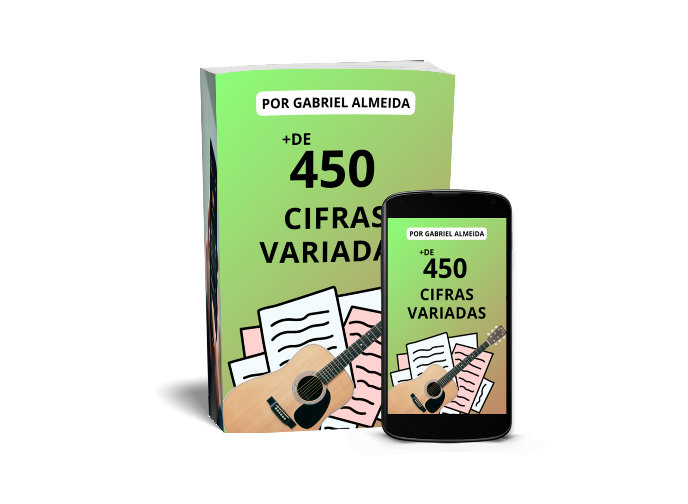

Curso de Violão do Zero ao Repertório
por Gabriel Almeida
Obs: M1, M2, M3 e M4 são os módulos; Exemplo: M1 = Módulo 1
Procurar aulas
Módulo 1
Aula de Boas Vindas Curso do Zero Ao Repertório
Aula 1 Como Tocar Violão Sem Teoria
Aula 2 Mentalidade Pra Aprender Violão
Aula 3 Como Escolher o Seu Violão
Aula 4 Como Afinar o Violão
Aula 5 Como Segurar o Violão
Aula 6 O Que São Acordes Parte 1
Aula 7 O Que São Acordes Parte 2
Aula 8 O Que São Diagramas de Acordes
Aula 9 Aprenda Todos os Acordes
Aula 10 Fazendo Acordes na Prática
Aula 11 Aumente a Velocidade nas Trocas de Acordes
Aula 12 Acordes de pestana feitos sem pestana
Aula 13 O que são e como fazer Ritmos
Aula 14 Como Fazer Qualquer Ritmo no Violão
Aula 15 Dicas Sobre Ritmos
Aula 16 Ritmos Fáceis Guarânia
Aula 17 Ritmos Fáceis Valsa
Aula 18 Como Tocar Qualquer Música no Violão
Aula 19 Toque Sua Primeira Música
Aula 20 A Única Coisa
Aula 21 O Que São Cifras
Aula 22 Encontrando Cifras
Aula 23 +450 Cifras Simples
Aula 24 Juntando Ritmo e Acordes
Aula 25 Encaixe da Voz Dicas
Aula 26 Encaixe da Voz Na prática
Aula 27 Como Criar um Repertório
Módulo 2
Aula 1 Ritmo de Rock
Aula 2 Ritmo Pop Rock
Aula 3 Ritmo de Toada
Aula 4 Ritmo de Vanera
Aula 5 Ritmo de 6 por 8
Aula 6 Quebra de Ritmo
Aula 7 Como Aprender Ritmo em Outros Lugares
Aula 8 Aprenda Ritmo na Prática Comigo
Aula 9 Ritmo Bolero Bachata
Aula 10 Ritmo Country 1 e 2
Módulo 3
Aula 1 Pestanas
Aula 2 Como Fazer Dedilhado
Aula 3 Ritmos de Dedilhado Parte 1
Aula 4 Ritmos de Dedilhado Parte 2
Aula 5 O Que São e Como Fazer Solos
Aula 6 Como Ler Tablaturas
Aula 7 Elementos da Tablatura Parte 1
Aula 7 Elementos da Tablatura Parte 2
Aula 8 Como Encontrar Tablaturas
Aula 9 O que é Tocar de Ouvido
Aula 10 Apostila Teoria Musical PDF
Aula 10 Escala Cromática
Aula 11 O que é Tom
Aula 12 O Que é Campo Harmônico e Como Usar
Aula 13 Como Tocar de Ouvido Parte 1
Aula 14 Como Tocar de Ouvido Parte 2
Aula 15 Sistema CAGED
Aula 16 Como Descobrir o Tom da Música
Módulo 4
Aula 1 Perca a Vergonha de Tocar em Público
Aula 2 Como Continuar Aprendendo no Violão Sempre
Depoimentos Gabriel Almeida
Finalização do Curso
Veja em qual nível de violão você está
NÍVEL 0 - Ainda não sabe afinar, e ainda não sabe pelo menos 3 acordes e um ritmo
Necessário para subir de nível:
- Como segurar, afinar e entender o braço do violão
- O que são acordes e como tocá-los
- Preparação para tocar seus primeiros ritmos
- Ritmo Guarânia e/ou Valsa
Aulas: Da aula M1 1 até a aula M1 17
NÍVEL 1 - Já sabe afinar, já sabe pelo menos 3 acordes e um ritmo mas ainda não toca nenhuma música
Necessário para subir de nível:
- Tocar sua primeira música no violão sem precisar cantar ainda
- Juntar ritmo e acordes com tranquilidade
Aulas: Da aula M1 18 até a aula 24
NÍVEL 2 - Já toca pelo menos uma música no violão mas não canta ainda
Necessário para subir de nível:
- Tocar sua primeira música no violão cantando junto
- Aprender vários ritmos, acordes e músicas novas
Aulas: Da aula M1 25 até todo o Módulo 2
NÍVEL 3 - Já toca e canta junto pelo menos uma música
Necessário para subir de nível:
- Pestanas e dedilhados
Aulas: Da aula M3 1 até a aula 4
NÍVEL 4 - Já toca músicas usando pestanas e dedilhados
Necessário para subir de nível:
- Solos (ler tablaturas e tocar)
- O básico da teoria musical (campo harmônico, escala cromática, intervalos)
- Tocar de ouvido
Aulas: Da aula M3 5 até todo o Módulo 4
NÍVEL 5 - Já sabe solos, teoria musical e tocar de ouvido
Parabéns! Você chegou ao último nível atual.

M1 Aula de Boas Vindas Curso do Zero Ao Repertório

M1 Aula 1 Como Tocar Violão Sem Teoria

M1 Aula 2 Mentalidade Pra Aprender Violão
Mostrar descrição
Aula de Mentalidade pra Aprender Violão - É uma coisa que você gosta, então vale a pena - Você deve priorizar você, é seu compromisso estar com o violão - Treinar todo dia é essencial - Decidir horários dos dias - Saber que é questão de tempo - Vão haver coisas mais fáceis e rápidas e outras mais demoradas pra se aprender - As duas coisas principais são paciência e persistência - Todo esse curso é sem teoria, na prática então não tem porque desistir, é só ter paciência e persistencia que você vai alcançar seu objetivo de tocar músicas nas rodas de amigos ou na sua igreja

M1 Aula 3 Como Escolher o Seu Violão

M1 Aula 4 Como Afinar o Violão

M1 Aula 5 Como Segurar o Violão

M1 Aula 6 O Que São Acordes Parte 1

M1 Aula 7 O Que São Acordes Parte 2

M1 Aula 8 O Que São Diagramas de Acordes

M1 Aula 9 Aprenda Todos os Acordes
Mostrar descrição
Baixe o Dicionário de Acordes - Link Abaixo https://drive.google.com/file/d/1rvzlZsSPwxwYaqAPZWOghW8ouD441tdJ/view?usp=sharing FAMÍLIAS DE ACORDES MAIS SIMPLES PRA VOCÊ JÁ COMEÇAR NO VIOLÃO Família 1 - A, E, D Família 2 - D, A, G Família 3 - G, D, C Família 4 - E, B7, A

M1 Aula 10 Fazendo Acordes na Prática
Mostrar descrição
- Escolher 3 acordes pra começar, de preferência o A, E, D Como deixar o som do acorde bonito - Dedo final da casa não no meio e nem no começo e nem no traste - Apertar bem - Dedos bem em pé - Não encostar a palma da mão no braço - De preferência, deixar o polegar na parte de trás do braço do violão - Cortar unhas Como ganhar velocidade - Treino de montagem e desmontagem - Treino de Pares

M1 Aula 11 Aumente a Velocidade nas Trocas de Acordes
Mostrar descrição
- Treino de Montagem e Desmontagem de Acordes - Treino de Pares Escolher 2 acordes (o par) e ficar trocando de um pro outro. A, E, D A, E - 20x - 1 toque em cada acorde e troca E, D - 20x - 1 toque em cada acorde e troca D, A - 20x - 1 toque em cada acorde e troca Escolher um número de repetições em cada par. ______________________________ Se você estiver aprendendo alguma música - use os acordes dessa música. Treino de pares com C, G.

M1 Aula 12 Acordes de pestana feitos sem pestana
Mostrar descrição
BAIXE O DICIONÁRIO DE ACORDES: https://drive.google.com/file/d/1rvzlZsSPwxwYaqAPZWOghW8ouD441tdJ/view?usp=sharing - Existe a hora certa de colocar a voz em relação às batidas Guarânia - 5 batidas - ↓↑↓↑↓ - Geralmente o ritmo começa na sílaba forte da palavra - Faça pedaço por pedaço até ficar bom - Dica de cantarolar a melodia - Acertar o começo pra depois continuar - Ouvir bastante a música original ou alguém tocando e cantando - REFERÊNCIA (Ouvir e depois fazer sozinho ou deixar tocando e fazer junto)

M1 Aula 13 O que são e como fazer Ritmos

M1 Aula 14 Como Fazer Qualquer Ritmo no Violão
Mostrar descrição
- Sempre aprenda os mais simples primeiro - Usando referências (vídeos de pessoas tocando/ensinando) - Setinhas que são visuais - Tempo (velocidade dos toques e pausas) - Pulsação mais forte e mais fraca - Repetição (compasso, começo e fim) - Bater nas cordas de uma vez e não como uma harpa - Pra começo não precisa recursos como abafamento, contra tempo, rasqueado - Existem uma infinidade de ritmos, com o tempo você mesmo vai criar as suas próprias formas de fazer ritmo.

M1 Aula 15 Dicas Sobre Ritmos
Mostrar descrição
- Aprenda apenas um por vez - Foque nos que fazem mais sentido pro seu estilo de música (procure as músicas e veja em qual ritmo ela é tocada e aprenda apenas esse, não tente aprender vários de uma vez) - Indico começar com os mais fáceis, Guarânia e Valsa, depois aprender os outros conforme a necessidade, existem ritmos mais usados e menos usados nas músicas.

M1 Aula 16 Ritmos Fáceis Guarânia

M1 Aula 17 Ritmos Fáceis Valsa

M1 Aula 18 Como Tocar Qualquer Música no Violão
Mostrar descrição
- Ordem de treino: 1 - Escolher uma música que seja simples (poucos acordes, acordes simples e ritmo simples - de preferência que você já conheça) Só 3 Acordes 2 - Saber a música (ouvir bastante durante estar treinando) 3 - Ter a cifra em mãos 4 - Saber os acordes 5 - Saber o ritmo 6 - Tocar o ritmo da música junto com os acordes (de preferência tendo o vídeo de referência, de alguém tocando ou a música original mesmo) - Você vai saber que está pronto pra colocar a voz quando estiver conseguindo tocar pelo menos uns 2 minutos da música sem errar (colocando o ritmo e os acordes sem errar, trocando os acordes na hora certa e deixando o ritmo no tempo certo) 7 - Adicionar a voz (referência) MELHOR DICA: APRENDA UMA POR VEZ - COMECE COM UMA

M1 Aula 19 Toque Sua Primeira Música

M1 Aula 20 A Única Coisa

M1 Aula 21 O Que São Cifras

M1 Aula 22 Encontrando Cifras

+450 Cifras Simples - Por Gabriel Almeida
- PDF 1: 200 Cifras Variadas (Sertanejo, MPB, Brega)
- PDF 2: 37 Cifras com Setinhas
- PDF 3: Outras 62 Cifras Variadas
- PDF 4: 185 Cifras Católicas
- PDF 5: 39 Cifras Evangélicas
Clique para ver a lista de músicas dessas cifras
De R$ 90,00
Por apenas R$ 30
Quero as cifras
M1 Aula 24 Juntando Ritmo e Acordes

M1 Aula 25 Encaixe da Voz Dicas
Mostrar descrição
- Existe a hora certa de colocar a voz em relação às batidas Guarânia - 5 batidas - ↓↑↓↑↓ - Geralmente o ritmo começa na sílaba forte da palavra - Faça pedaço por pedaço até ficar bom - Dica de cantarolar a melodia - Acertar o começo pra depois continuar - Ouvir bastante a música original ou alguém tocando e cantando - REFERÊNCIA (Ouvir e depois fazer sozinho ou deixar tocando e fazer junto)

M1 Aula 26 Encaixe da Voz Na prática

M1 Aula 27 Como Criar um Repertório

M2 Aula 1 Ritmo de Rock

M2 Aula 2 Ritmo Pop Rock

M2 Aula 3 Ritmo de Toada

M2 Aula 4 Ritmo de Vanera

M2 Aula 5 Ritmo de 6 por 8

M2 Aula 6 Quebra de Ritmo

M2 Aula 7 Como Aprender Ritmo em Outros Lugares

M2 Aula 8 Aprenda Ritmo na Prática Comigo
Mostrar descrição
COMO APRENDER RITMOS COM OUTRAS PESSOAS NA PRÁTICA? ASSISTA A AULA APERTANDO NO LINK ABAIXO: https://drive.google.com/drive/folders/12SOyNWk9Hs7A7JJ8uLpeUr_7URS4fA0S ______________________________ Ritmo Aprendido na Outra Aula (onde ensino ritmo através de outras fontes) RITMO VANERA D-CAP-CA(C) 1 - 234-56(7) D - 3 DEDOS C - CIMA (POLEGAR OU INDICADOR) A - ABAFAMENTO P - POLEGAR PRA BAIXO (C) - BATIDA PRA CIMA OPCIONAL

M2 Aula 9 Ritmo Bolero Bachata

M2 Aula 10 Ritmo Country 1 e 2

M3 Aula 1 Pestanas

M3 Aula 2 Como Fazer Dedilhado

M3 Aula 3 Ritmos de Dedilhado Parte 1
Mostrar descrição
- PIMA NORMAL POP ROCK COMPLETO (LENTO) QUEBRA - DOIS TOQUES - PIMA DOBRADO METADE DO POP ROCK (RÁPIDO) - TOCAR DUAS VEZES PRA FAZER O RITMO DE POP ROCK TODO QUEBRA - FAZER UMA VEZ - DEDILHADO 1 P I M A M I ALELUIA SEU AMOR AINDA É TUDO - DEDILHADO 2 (PA) M I - A M I A M FOLHA SECA CADEIRA DE RODAS NO DIA QUE SAI DE CASA RITMO DE ROCK COMPLETO QUEBRA APÓS 3 TOQUE - DEDILHADO 3 P I M I A M I M METADE DO POP ROCK - TOCAR DUAS VEZES PRA FAZER O RITMO DE POP ROCK TODO QUEBRA - FAZER UMA VEZ

M3 Aula 4 Ritmos de Dedilhado Parte 2
Mostrar descrição
- PIMA NORMAL POP ROCK COMPLETO (LENTO) QUEBRA - DOIS TOQUES - PIMA DOBRADO METADE DO POP ROCK (RÁPIDO) - TOCAR DUAS VEZES PRA FAZER O RITMO DE POP ROCK TODO QUEBRA - FAZER UMA VEZ - DEDILHADO 1 P I M A M I ALELUIA SEU AMOR AINDA É TUDO - DEDILHADO 2 (PA) M I - A M I A M FOLHA SECA CADEIRA DE RODAS NO DIA QUE SAI DE CASA RITMO DE ROCK COMPLETO QUEBRA APÓS 3 TOQUE - DEDILHADO 3 P I M I A M I M METADE DO POP ROCK - TOCAR DUAS VEZES PRA FAZER O RITMO DE POP ROCK TODO QUEBRA - FAZER UMA VEZ

M3 Aula 5 O Que São e Como Fazer Solos

M3 Aula 6 Como Ler Tablaturas

M3 Aula 7 Elementos da Tablatura Parte 1
...

M3 Aula 16 Como Descobrir o Tom da Música
Mostrar descrição
COMO DESCOBRIR O TOM DA MÚSICA? 0 - Escrever a música pra cifrar 1 - Descobrir o primeiro acorde (geralmente ele é o acorde do tom) - Totalmente de ouvido - Tentativa e erro 2 - Perceber quando a música muda de acorde e descobrir cada um desses acordes 3 - Cruzar os acordes que descobriu com os campos harmônicos D, A, G, Em, Bm, F#m D, A, G E, A, D A, E, B

M4 Aula 1 Perca a Vergonha de Tocar em Público
Mostrar descrição
A vergonha tira você daquilo que você quer viver. O único responsável por você é você. Ninguém tem nada haver com os sua exposição. Você não deve deixar de viver as coisas que você gosta por medo do que as pessoas vão falar de você. Você tem que ter segurança própria. Colocando o pézinho na água. Se você já está tocando bem sozinho, quando você estiver tocando com público não muda nada.

M4 Aula 2 Como Continar Aprendendo no Violão Sempre
Mostrar descrição
NÍVEIS DIFERENTES NO VIOLÃO 1 - Tocar no próprio violão coisas básicas (Acordes Simples, Ritmos Simples) Já consegue acompanhar músicas e até alguém cantando. 2 - Tocar e cantar Acompanha músicas do começo ao fim, com isso você já pode fazer apresentações, tocar na igreja, na rodas de amigos, tocar na noite. Ritmos, acordes e encaixe da voz. Usando cifras (pode continuar olhando pra cifra ou decorar conforme a cifra) 2.1 - Fazer Pestanas 2.2 - Fazer dedilhados 3 - Consegue aprimorar seu ouvido musical (Quando você não precisa mais de cifra) Usar algumas técnicas/macetes. Campo harmônico Escala Cromática Tom, Semitom. Você consegue ouvir uma música e saber em que tom ela está, que ritmo está sendo tocado e quais os acordes usados. Quando você já tem um repertório grande de músicas você consegue aprender 70% disso na prática sem precisar estudar a teoria. 4 - Solar/Fazer solos (Tocar nota por nota) Pegar a melodia da música e tocar (como se fosse a música cantada porém com o violão) 5 - Usar acompanhamento junto com solo. Ou seja, você tocar acordes e ritmos junto com o solo ao mesmo tempo. Dedilhado, técnica de digitação, domínio de ritmo, acordes, pestanas.

M4 Depoimentos Gabriel Almeida

M4 Finalização do Curso
Voltar ao topo